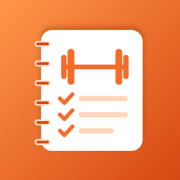

Trainingsbuch
Dein Trainingstagebuch fürs Fitnessstudio
Kontakt
Fragen, Probleme oder Ideen? Schreib mir gern eine E-Mail an signorependejo@gmail.com. Ich antworte in der Regel innerhalb weniger Tage.
Hilfreich ist es, wenn du dein Gerätemodell (iPhone oder iPad), die iOS-Version und eine kurze Beschreibung mitschickst.
Was kann die App?
- Trainings mit Übungen, Gewicht und Wiederholungen eintragen – die Sätze vom letzten Mal sind schon vorausgefüllt.
- Pläne wie „Push“, „Pull“ oder „Beine“ anlegen – mit Sollwerten für Sätze, Wiederholungen, Gewicht und Pause – und mit einem Tipp starten.
- Pläne senden: als Datei per WhatsApp, Mail oder AirDrop verschicken, z. B. als Trainer an deine Kunden.
- Sätze abhaken und automatisch einen Pausentimer starten, der sich auch im Hintergrund meldet.
- Neue Rekorde beim Training erkennen – mit Pokal und kleiner Feier.
- Fortschritt je Übung als Diagramm sowie eine Statistik mit Wochenverlauf, Serien und Sätzen je Muskelgruppe.
- Über 75 Übungen nach Muskelgruppen – eigene Übungen legst du in Sekunden an.
- Geräteeinstellungen wie Sitzhöhe oder Lehne pro Übung notieren – sie erscheinen im Training direkt unter der Übung.
- Steigerungsvorschlag, wenn du letztes Mal alles geschafft hast, und ein Scheibenrechner für die Langhantel.
- Die Pause läuft als Live-Aktivität auf dem Sperrbildschirm und in der Dynamic Island mit.
- Spürbares Feedback: eigene Vibrationen für Satz, Übung, Rekord und Ziel, dazu Konfetti – beides abschaltbar.
- Läuft auf iPhone, iPad und mit der Apple Watch.
- Gewichte in kg oder lb, Übungen mit Körpergewicht (z. B. Klimmzüge) und auf Zeit (z. B. Plank).
Die App gibt es auf Deutsch, Englisch, Französisch, Spanisch, Italienisch, Niederländisch, Polnisch, Portugiesisch, Schwedisch, Dänisch, Norwegisch und Finnisch.
Häufige Fragen
Der Pausentimer meldet sich nicht, wenn die App im Hintergrund ist.
Dafür braucht die App die Erlaubnis für Mitteilungen. Prüfe in den Einstellungen › Mitteilungen › Trainingsbuch, ob Mitteilungen erlaubt sind. Ist ein Fokus wie „Nicht stören“ aktiv, kann die Mitteilung auch dadurch stummgeschaltet sein.
Wie entsteht ein „neuer Rekord“?
Ein Satz zählt als Rekord, wenn du bei einer Übung mehr Gewicht schaffst als je zuvor oder wenn das daraus geschätzte Maximalgewicht für eine Wiederholung (1RM, berechnet nach Epley) höher ist als bisher. Beim allerersten Training einer Übung gibt es noch nichts zu schlagen – Rekorde zählen also ab dem zweiten Mal.
Wie lege ich einen Plan an?
Im Tab „Pläne“ auf „Neuen Plan erstellen“ tippen, Übungen auswählen (auch mehrere auf einmal) und unter jeder Übung die Sollwerte antippen – Sätze, Wiederholungen, Gewicht und Pause. Offene Werte übernimmt die App beim Start vom letzten Training. Du kannst auch ein fertiges Training über das Menü „⋯“ mit „Als Plan sichern“ übernehmen.
Wie schicke ich jemandem einen Plan?
Im Tab „Pläne“ auf „Pläne senden“ tippen, Pläne auswählen und die Datei z. B. per WhatsApp oder Mail verschicken. Wer sie mit Trainingsbuch öffnet, kann die Pläne mit einem Tipp übernehmen. Pläne, die schon vorhanden sind, erkennt die App.
Wie teile ich mein Training auf Instagram?
Im Training über „⋯“ › „Training teilen“ (Trainingsbuch Pro). Wähle App-Farbe oder ein eigenes Foto als Hintergrund, das Format (Beitrag, Quadrat oder Story) und welche Werte aufs Bild sollen. Das Foto wird nicht in der App gespeichert.
Wo trage ich Geräteeinstellungen ein?
Direkt im Training: Unter jeder Übung steht „Geräteeinstellung hinzufügen“ – antippen und z. B. „Sitz 4, Lehne 2“ eintragen. Du kannst sie auch unter Übungen › Übung › Bearbeiten ändern.
Wie stelle ich auf Pfund (lb) um?
Unter ⓘ › Einstellungen › Gewichtseinheit. Deine Einträge bleiben exakt erhalten, nur die Anzeige wechselt. Dort stellst du auch das Gewicht der Hantelstange für den Scheibenrechner ein.
Wie funktioniert der Steigerungsvorschlag?
Hast du beim letzten Training alle Sätze einer Übung abgehakt und mindestens so viele Wiederholungen geschafft wie davor, schlägt die App vor, heute etwas mehr aufzulegen (bzw. eine Wiederholung oder 5 Sekunden mehr). Mit „Übernehmen“ wird es eingetragen. Abschalten kannst du die Vorschläge unter ⓘ › Einstellungen.
Ich vermisse eine Übung.
Lege sie einfach selbst an: im Tab „Übungen“ auf „+“ tippen oder bei der Übungsauswahl den Namen ins Suchfeld schreiben und „als neue Übung anlegen“ wählen.
Kann ich Kommazahlen eingeben?
Ja, zum Beispiel 62,5 kg. Komma und Punkt funktionieren beide.
Wo werden meine Trainings gespeichert?
Auf deinem Gerät. Es gibt kein Konto und keinen Server. Deine Daten sind in deinem normalen Geräte-Backup enthalten. Mit Trainingsbuch Pro kannst du sie zusätzlich über deinen privaten iCloud-Speicher zwischen iPhone und iPad abgleichen.
Was bringt Trainingsbuch Pro?
Ein einmaliger Kauf, kein Abo: iCloud-Sync, Widgets für Home- und Sperrbildschirm, Erinnerungen an deinen Trainingstagen und „Training teilen“ als Bild. Alles andere bleibt kostenlos.
Was bringt das Trinkgeld?
Unter ⓘ › Entwickler unterstützen kannst du freiwillig ein Trinkgeld geben. Es schaltet nichts frei. Es hilft mir einfach, die App weiterzuentwickeln. Danke! ❤️
Wie lösche ich Daten?
Trainings, Übungen, Sätze und Pläne löschst du per Wischen nach links. Wenn du die App löschst, werden alle Daten entfernt.